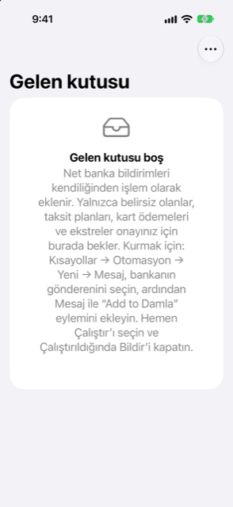

Kılavuz › Parayı kaydetme
Gelen kutusu
Net olmayan her şey, sizin tek dokunuşunuzu bekler.
Gelen kutusu, Damla'nın kendi başına işlem yapmadığı banka mesajlarını tutar — çünkü mesaj anlaşılmadı, ya da işlem yapmak gelecekteki parayı taahhüt edecekti. Gelen kutusundan siz dokunmadıkça defterlere hiçbir şey girmez; her öğe kısa bir gözden geçirmedir.

Ne zaman kullanılır
- Bugün, N onayınızı bekliyor gösteriyorsa.
- Beklediğiniz bir ödeme Hareket'te henüz görünmediyse.
- Bir bildirim, Damla'nın henüz tanımadığı bir kart ya da hesaptan söz ediyorsa.
Adım adım
- Bugün'ü açın ve N onayınızı bekliyor'a dokunun.
- Bir öğeye dokunun. Mesaj önceden okunmuş olarak normal Ekle ekranında açılır.
- Damla'nın Kontrol et ve kaydet bölümünde ne bulduğuna bakın. Eksik bir şey varsa Tamamla'ya dokunun ve kalanını formda doldurun.
- Kaydet'e dokunun. Öğe, onu kaydettiğiniz an Gelen kutusundan çıkar.
- Bunun yerine bir öğeyi atmak için, ona dokunun ardından Vazgeç'e dokunun.
- Birden çoğunu aynı anda kaldırmak için listedeki Düzenle'ye dokunun ve onları silin.
Bir ekstre bildirimi size kaydedilecek bir işlem sunmaz: Ekstreyi gözden geçir'e dokunarak ekstre incelemesini açın. Uyguladığınızda öğe Gelen kutusundan çıkar.
Bir mesaj neden bekliyor
- Bir taksit planı: gelecekteki parayı taahhüt eder, bu yüzden onayınızı ister.
- Bir kart ödemesi: mesaj, hangi hesabın ödediğini söylemiyor.
- Henüz hiçbir hesapla eşleşmeyen rakamlar: bir kez tamamlayın, Damla o rakamları kalıcı olarak öğrenir.
- Damla'nın henüz döviz kuru bulunmayan bir para biriminde bir alışveriş: kartın ne faturalandığını sorar.
- Az önce eklenmiş bir ödemenin olası bir kopyası: aynı alışverişse vazgeçin.
- Banka bildirimi olarak hiç okunamayan bir mesaj.
- Bir ekstre bildirimi; o alışverişle değil, kartın borcuyla ilgilidir.
Bilmek iyi olur
- Aynı mesajın iki kez teslimi — iki kez tetiklenen bir Kısayol, iletilmiş bir kopya — iki kez değil, bir kez bekler.
- Tek kullanımlık bir kod atılır ve asla saklanmaz.
- Hiç parayla ilgisi olmayan bir mesaj saklanmaz ve listelenmez, böylece özel bir mesaj gelen kutusuna asla düşmez.
- Telefon kilitliyken gelen bir bildirim telefonda bekler ve uygulamayı bir sonraki açıp kilidi açtığınızda eklenir.
- Gelen kutusundan kaydettiğiniz bir işlem, banka bildiriminden gelmiş olarak saklanır; böylece Hareket'te, bildirimle eklenmiş ötekiler gibi görünür.
Son bildirimler
Ayarlar'daki Son bildirimler, son 50 bildirimin günlüğüdür, yenisi önce. Her biri kısa bir gerekçe taşır: eklendi, Gelen kutusunda bekliyor (ve neden), zaten kayıtlıydı, yok sayıldı ya da not edildi (gelen bir fatura). Otomasyonunuzun çalıştığını denetlemek ve bir mesajın neden öylece gittiğini görmek için kullanın.
İlgili
- Bir mesajı yapıştırın ya da paylaşın
- Otomatik yakalama nasıl çalışır
- Damla neyi yok sayar ve bir bildirimi geri alma
- Kredi kartları
Anlaşılmayan ya da eksik bir şey mi var? support@raveniq.ai adresine yazın ve hangi sayfa olduğunu belirtin.